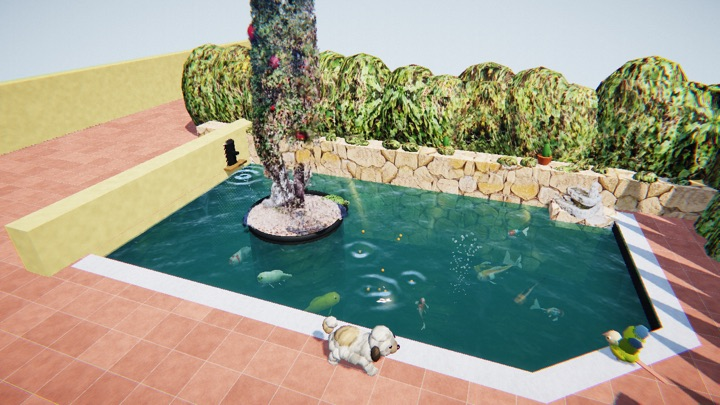
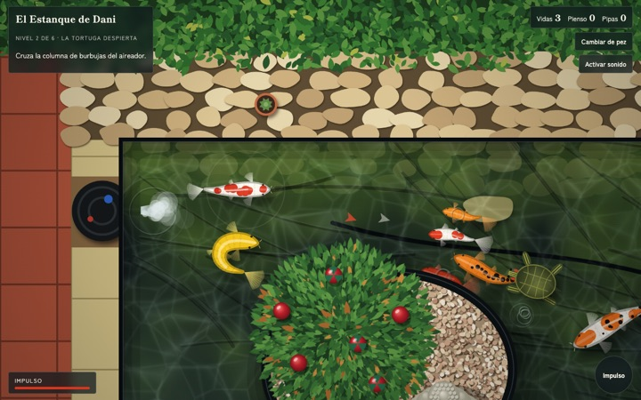

El Estanque de Dani
Elige cómo quieres entrar al estanque. En los dos eres un koi que come, crece y esquiva a Mbappe, la tortuga; en el 3D también puedes ser Mbappe, Dorito (la pirrura) o Isabella. Cada juego guarda su propio progreso.

Bajo el agua · 3D
Juega como koi, como Mbappe, como Dorito o como Isabella, cada uno con sus niveles y récords, y pon nombre a tus peces en el álbum. Tus peces con su piel real, la isla, la cascada y el moái escaneados, e Isabella echando el pienso. Pesa unos 13 MB y pide un móvil con potencia.Jugar en 3D
Desde arriba · 2D
El estanque a vista de pájaro. Más ligero y fácil de manejar con un dedo; va bien en cualquier móvil.Jugar en 2DUna vez abierta, la aplicación funciona sin conexión. Las formas de Dorito y Mbappe en el 3D parten de los modelos «Parrot» y «Turtle» de Poly by Google (CC-BY 3.0), repintados.